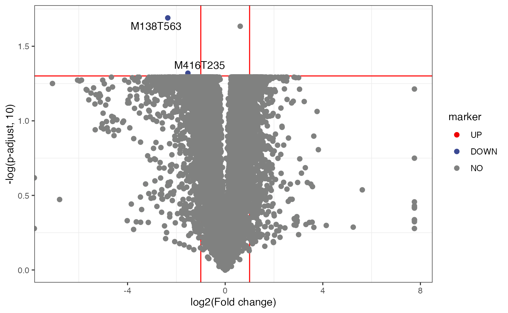
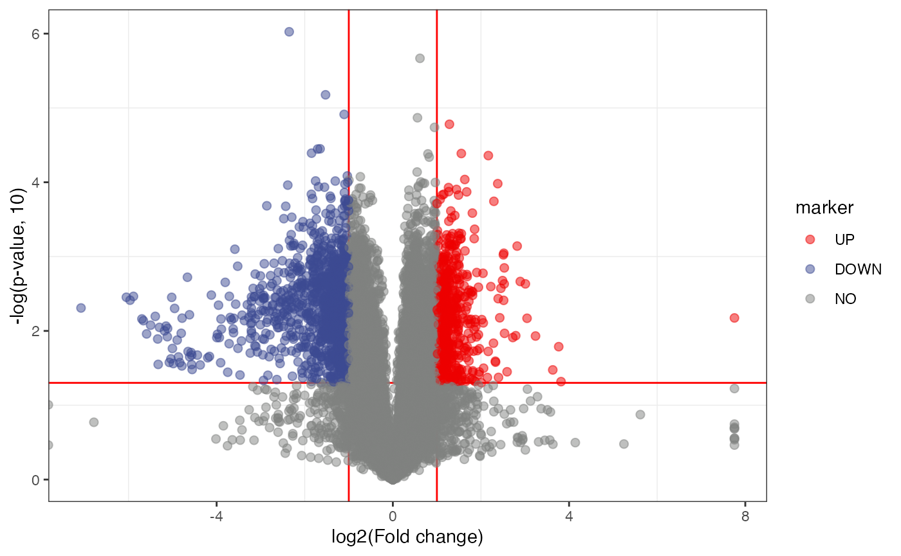
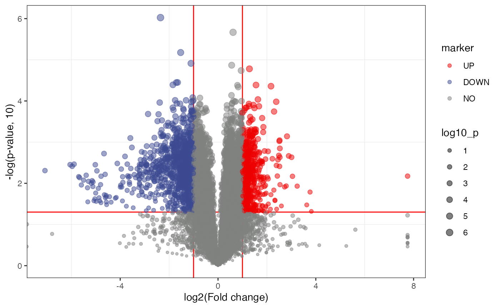

vignettes/univariate_analysis.Rmd
univariate_analysis.Rmd
library(massdataset)
library(tidyverse)
library(massstat)
data("liver_aging_pos")
liver_aging_pos
#> --------------------
#> massdataset version: 0.01
#> --------------------
#> 1.expression_data:[ 21607 x 24 data.frame]
#> 2.sample_info:[ 24 x 4 data.frame]
#> 3.variable_info:[ 21607 x 3 data.frame]
#> 4.sample_info_note:[ 4 x 2 data.frame]
#> 5.variable_info_note:[ 3 x 2 data.frame]
#> 6.ms2_data:[ 0 variables x 0 MS2 spectra]
#> --------------------
#> Processing information (extract_process_info())
#> Creation ----------
#> Package Function.used Time
#> 1 massdataset create_mass_dataset() 2021-12-23 00:24:02
w_78 =
liver_aging_pos %>%
activate_mass_dataset(what = "sample_info") %>%
dplyr::filter(group == "78W") %>%
dplyr::pull(sample_id)
w_24 =
liver_aging_pos %>%
activate_mass_dataset(what = "sample_info") %>%
dplyr::filter(group == "24W") %>%
dplyr::pull(sample_id)
control_sample_id = w_24
case_sample_id = w_78
liver_aging_pos =
mutate_fc(
object = liver_aging_pos,
control_sample_id = control_sample_id,
case_sample_id = case_sample_id,
mean_median = "mean"
)
#> 10 control samples.
#> 10 case samples.
#>
liver_aging_pos =
mutate_p_value(
object = liver_aging_pos,
control_sample_id = control_sample_id,
case_sample_id = case_sample_id,
method = "t.test",
p_adjust_methods = "BH"
)
#> 10 control samples.
#> 10 case samples.
#>
object = liver_aging_pos
volcano_plot(
object = object,
fc_column_name = "fc",
p_value_column_name = "p_value_adjust",
labs_x = "log2(Fold change)",
labs_y = "-log(p-adjust, 10)",
fc_up_cutoff = 2,
fc_down_cutoff = 0.5,
p_value_cutoff = 0.05,
add_text = TRUE
)
volcano_plot(
object = object,
fc_column_name = "fc",
p_value_column_name = "p_value",
labs_x = "log2(Fold change)",
labs_y = "-log(p-value, 10)",
fc_up_cutoff = 2,
fc_down_cutoff = 0.5,
p_value_cutoff = 0.05,
add_text = FALSE,
point_alpha = 0.5
)
volcano_plot(
object = object,
fc_column_name = "fc",
p_value_column_name = "p_value",
labs_x = "log2(Fold change)",
labs_y = "-log(p-value, 10)",
fc_up_cutoff = 2,
fc_down_cutoff = 0.5,
p_value_cutoff = 0.05,
add_text = FALSE,
point_alpha = 0.5,
point_size_scale = "p_value"
) +
scale_size_continuous(range = c(0.5, 3))
sessionInfo()
#> R version 4.1.2 (2021-11-01)
#> Platform: x86_64-apple-darwin17.0 (64-bit)
#> Running under: macOS Big Sur 10.16
#>
#> Matrix products: default
#> BLAS: /Library/Frameworks/R.framework/Versions/4.1/Resources/lib/libRblas.0.dylib
#> LAPACK: /Library/Frameworks/R.framework/Versions/4.1/Resources/lib/libRlapack.dylib
#>
#> locale:
#> [1] en_US.UTF-8/en_US.UTF-8/en_US.UTF-8/C/en_US.UTF-8/en_US.UTF-8
#>
#> attached base packages:
#> [1] stats graphics grDevices utils datasets methods base
#>
#> other attached packages:
#> [1] ggfortify_0.4.14 massstat_0.99.4 forcats_0.5.1 stringr_1.4.0
#> [5] dplyr_1.0.7 purrr_0.3.4 readr_2.1.1 tidyr_1.1.4
#> [9] tibble_3.1.6 ggplot2_3.3.5 tidyverse_1.3.1 magrittr_2.0.2
#> [13] masstools_0.99.3 massdataset_0.99.6
#>
#> loaded via a namespace (and not attached):
#> [1] readxl_1.3.1 snow_0.4-4 backports_1.4.1
#> [4] circlize_0.4.14 systemfonts_1.0.3 igraph_1.2.11
#> [7] plyr_1.8.6 lazyeval_0.2.2 BiocParallel_1.28.3
#> [10] crosstalk_1.2.0 leaflet_2.0.4.1 digest_0.6.29
#> [13] foreach_1.5.1 yulab.utils_0.0.4 htmltools_0.5.2
#> [16] fansi_1.0.2 memoise_2.0.1 cluster_2.1.2
#> [19] doParallel_1.0.16 tzdb_0.2.0 openxlsx_4.2.5
#> [22] limma_3.50.0 ComplexHeatmap_2.10.0 modelr_0.1.8
#> [25] matrixStats_0.61.0 rARPACK_0.11-0 pkgdown_2.0.2
#> [28] colorspace_2.0-2 rvest_1.0.2 ggrepel_0.9.1
#> [31] textshaping_0.3.6 haven_2.4.3 xfun_0.29
#> [34] crayon_1.4.2 jsonlite_1.7.3 impute_1.68.0
#> [37] iterators_1.0.13 glue_1.6.1 gtable_0.3.0
#> [40] zlibbioc_1.40.0 GetoptLong_1.0.5 shape_1.4.6
#> [43] BiocGenerics_0.40.0 scales_1.1.1 vsn_3.62.0
#> [46] DBI_1.1.2 Rcpp_1.0.8 mzR_2.28.0
#> [49] viridisLite_0.4.0 clue_0.3-60 gridGraphics_0.5-1
#> [52] preprocessCore_1.56.0 clisymbols_1.2.0 stats4_4.1.2
#> [55] MsCoreUtils_1.6.0 htmlwidgets_1.5.4 httr_1.4.2
#> [58] RColorBrewer_1.1-2 ellipsis_0.3.2 farver_2.1.0
#> [61] pkgconfig_2.0.3 XML_3.99-0.8 sass_0.4.0
#> [64] dbplyr_2.1.1 utf8_1.2.2 labeling_0.4.2
#> [67] reshape2_1.4.4 ggplotify_0.1.0 tidyselect_1.1.1
#> [70] rlang_1.0.0 munsell_0.5.0 cellranger_1.1.0
#> [73] tools_4.1.2 cachem_1.0.6 cli_3.1.1
#> [76] generics_0.1.1 broom_0.7.12 evaluate_0.14
#> [79] fastmap_1.1.0 mzID_1.32.0 yaml_2.2.2
#> [82] ragg_1.2.1 knitr_1.37 fs_1.5.2
#> [85] zip_2.2.0 ncdf4_1.19 pbapply_1.5-0
#> [88] xml2_1.3.3 compiler_4.1.2 rstudioapi_0.13
#> [91] plotly_4.10.0 png_0.1-7 affyio_1.64.0
#> [94] reprex_2.0.1 bslib_0.3.1 stringi_1.7.6
#> [97] highr_0.9 RSpectra_0.16-0 desc_1.4.0
#> [100] MSnbase_2.20.4 lattice_0.20-45 Matrix_1.4-0
#> [103] ProtGenerics_1.26.0 ggsci_2.9 vctrs_0.3.8
#> [106] pillar_1.6.5 lifecycle_1.0.1 BiocManager_1.30.16
#> [109] jquerylib_0.1.4 MALDIquant_1.21 GlobalOptions_0.1.2
#> [112] data.table_1.14.2 corpcor_1.6.10 patchwork_1.1.1
#> [115] R6_2.5.1 pcaMethods_1.86.0 affy_1.72.0
#> [118] gridExtra_2.3 IRanges_2.28.0 codetools_0.2-18
#> [121] fastDummies_1.6.3 MASS_7.3-55 assertthat_0.2.1
#> [124] rprojroot_2.0.2 rjson_0.2.21 withr_2.4.3
#> [127] S4Vectors_0.32.3 parallel_4.1.2 hms_1.1.1
#> [130] mixOmics_6.18.1 grid_4.1.2 rmarkdown_2.11
#> [133] Biobase_2.54.0 lubridate_1.8.0 ellipse_0.4.2